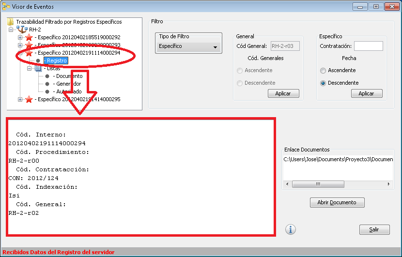
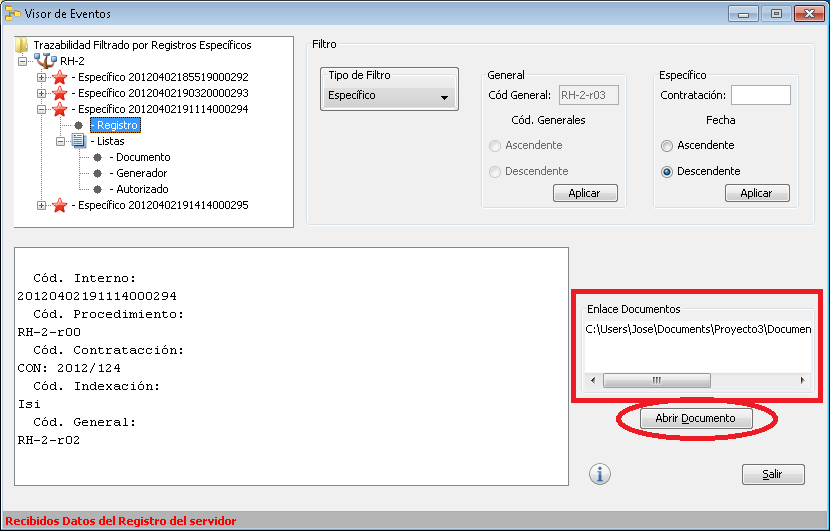
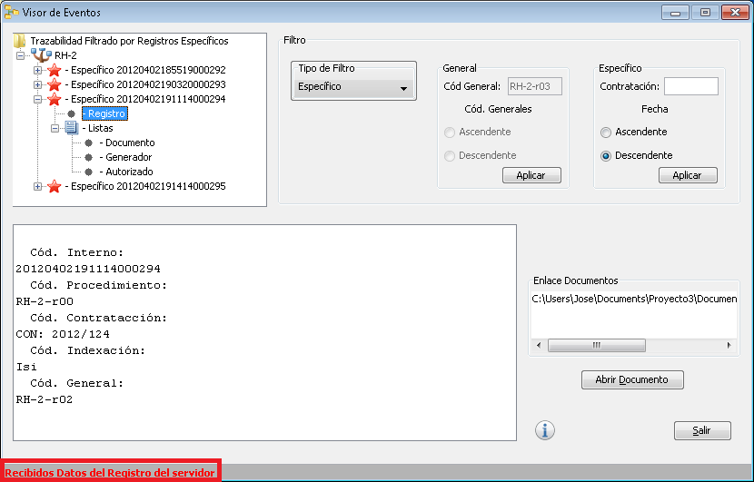

La pantalla del Visor de Eventos está dividida en varias secciones:
En esta sección nos mostrara en forma de árbol todos aquellos procesos que tenga en la BBDD desde el número de proceso el tipo que es y lo que contiene, dependiendo el filtro que hayamos elegido tendrá unos u otros.
Seleccionando los procesos o sus listas tendremos su información en la pantalla de abajo donde nos mostrara los datos almacenados de esos procesos.
Los filtros, como dice la palabra nos filtraran los resultados para verlo en el árbol, dependiendo lo que seleccionemos aquí, es lo que se verá en el listado de procesos en árbol.
Podemos filtrar los resultados, utilizando este filtro que nos mostrara:
Este solo se activara cuando estén seleccionados los procesos Generales, pudiendo filtrarlos por:
Este solo se activara cuando estén seleccionados los procesos Específicos, pudiendo filtrarlos por:
Aquí se mostrara la información del proceso seleccionado en el Árbol, si tuvieras algún enlace, a algún documentos lo veríamos en "Enlaces Documentos"
En el Enlace Documentos, nos aparecerá una lista con los documentos que se insertaron en el proceso de almacenamiento, sino tiene ninguno, no se mostrará ninguno tampoco. Para abrir el documento, seleccionaremos el enlace y pulsaremos sobre el botón "Abrir Documento", la aplicación lo abrirá con el programa correspondiente y se lo mostrara al Cliente .
Por último tiene el botón de "Salir", que como dice la palabra sale de la aplicación.
En esta sección es donde aparecerán los mensajes de las operaciones que se vayan realizando.

|
Ir a Administrador | Ir a Inicio | |